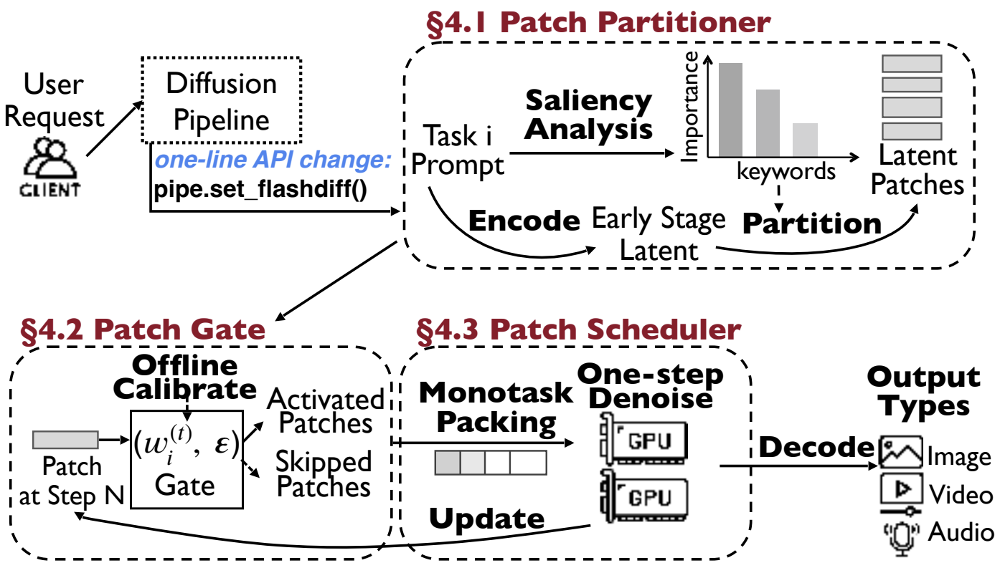

FlashDiff: Efficient Regional Execution and Scheduling for Diffusion Model Serving
Preprint, under review
1University of Illinois Urbana-Champaign (UIUC), 2Vanderbilt University, 3HKUST, 4Nvidia, 5Texas A&M University

In short
FlashDiff is a serving system that makes diffusion models for images, video and audio faster to serve, including across multiple GPUs. During denoising, different regions of the latent settle at different rates, and neighboring steps change little. FlashDiff splits the latent into regions using early attention signals, skips updates to regions that have stopped changing, and uses an affinity-aware scheduler to spread the remaining work across GPUs and concurrent requests. On real-world image, video and audio workloads it cuts end-to-end serving latency by 30–97% and raises throughput by 1.2–2.2×.
Abstract
Diffusion models have become the central backbone for modern image, video, and audio generation, but their efficient service remains a challenge. Unlike autoregressive decoding, diffusion inference repeatedly updates high-dimensional spatial or temporal latents over many denoising steps. This all-region execution pattern makes generation latency high and limits serving throughput. Existing multi-GPU parallelization methods can reduce per-step computation, but often introduce substantial activation exchange overhead, causing communication to offset or even outweigh the benefits of parallel execution. This paper presents FlashDiff, a diffusion serving system that improves inference efficiency through adaptive regional execution and scheduling. FlashDiff is based on the observation that diffusion refinement is not uniform across latent regions or denoising steps: different regions often stabilize at different rates, while neighboring steps exhibit strong temporal correlation. FlashDiff leverages these properties to selectively execute only regions that require further refinement and to reallocate the resulting compute slack across concurrent serving requests. FlashDiff consists of three mechanisms. First, it decomposes the latent representation into coherent execution regions using early-stage attention signals, preserving semantic structure while exposing fine-grained parallelism. Second, it uses a lightweight runtime controller to estimate region activity and bypass low-impact updates when further refinement is unlikely to affect output quality. Third, it applies an affinity-aware online scheduler that co-locates dependent regions, balances residual load across GPUs, and reuses reclaimed compute capacity to improve serving efficiency. Across real-world image, video, and audio workloads, FlashDiff reduces end-to-end serving latency by 30-97% and improves throughput by 1.2-2.2x.
Citation
@article{qiao2026flashdiff,
title={FlashDiff: Efficient Regional Execution and Scheduling for Diffusion Model Serving},
author={Yaqi Qiao and Ping He and Songrun Xie and Ayush Barik and Chensong Zhang and Zhengzhong Tu and Fan Lai},
journal={arXiv preprint arXiv:2607.12121},
year={2026}
}